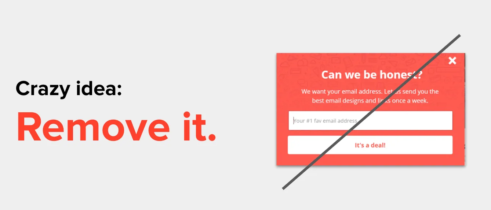

For how annoying they are and how much they go against UX best practices, it seems like you can’t go to a website these days without getting served an unapologetic pop-up.
We all know how we feel when this happens:
- Frustrated
- Insulted
- Tricked
- Instantly unengaged
The thing that makes me wonder is why every company continues to do this when we know that there’s a collective feeling of disdain for these experiences. So I went digging to find out what I could find about pop-ups.

In the 1990s, Ethan Zuckerman (no relation to Mortimer Zuckerman who owned The Atlantic, Forbes, and Fast Company from what we could find) created the pop-up ad because some advertisers didn't want their banner sitting directly next to some content. The pop-up was a way to get around that - by putting the ad in another small browser which didn't "directly" correlate to the content of the page. But Zuckerman hates what he did. Not only because he thinks that an ad-run model isn't the best for the internet, but because of how rampant the annoying practice became.
And it turns out that there’s a lot of research out there about the annoyance of pop-ups. OptinMonster, a company that is known for creating opt-in pop-up forms, admitted to the negative feedback that they get for the experience. Marketing coalitions have conducted experiments with different sizes and types that show that pop-ups are some of the most loathed things that can be done on a site, such as this one:

And this one, showing that a pop-up is more positively correlated with annoyance, distracting, and creepy and negatively correlated with being “useful” to the user:

Google has even been penalizing websites which use intrusive pop-ups, which they define as:
- A popup that covers the main content, either immediately after the user navigates to the page or while they are looking through the page
- Using a layout where the above-the-fold portion of the page appears to be an interstitial, but the original content has been pushed below the fold
- Forcing the dismissal of a standalone interstitial before accessing the main content

(source: Google)
So without asking the question of “do pop-ups work?” it seems like everyone is in agreement that they are definitely annoying.
Ad:
But here’s the thing: If they are so annoying, why is everyone still doing it? Because annoying doesn’t equal ineffective. And if done right, they can actually have a positive impact on your readers and business.
The biggest thing that people will talk about when using a pop-up for newsletter subscribers is how much your list will grow. Here at ReallyGoodEmails.com, we tested that theory out with our own pop-up form on our site. We used different copy, different positioning, different timing, different colors, etc. Before we launched our new site, it looked like this:

On an average day, we were converting about 2.3% of our users. It was pretty consistent, so on days where traffic spiked (which is typically Monday and Tuesdays) we’d see a steep bump in sign-up volume and then flatten out (and sometimes dip) over the weekends.

But we were under the impression that we pointed out earlier; the impression that pop-ups were an annoyance and if we wanted people to enjoy the site and become loyal readers, we didn’t want them to be frustrated or come back less because of our pop-up. Plus, we had a ton of people every week write to us to say that their colleague had referred them to our newsletter or they had seen a snippet of it online somewhere and were manually signing up without being prompted via a pop-up. So with those two things, we decided to remove the pop-up completely and see what happened.
For most people, this is where their alarm bells would be going off. Could you imagine going to your boss and telling them that you were going to stop asking people for their email addresses?

While we were still seeing new subscribers through that non-pop-up method, our list size was in decline. This is because our weekly unsubscribes (due to bounces, natural churn, and people who definitely didn’t like what we were sending) were more than those super eager new subscribers who had to find their way to our sign-up form. This is what we call a negative delta, and something that I was taught was the worst thing an email marketer could see.

But we at RGE don’t really care about list size. We often say: “Build relationships. Not lists.” We are okay with people leaving our lists because we’d rather talk to the people who want to hear from us than try to get the attention of those who could hear from us. The importance of list size is based on vanity metrics and billables. Most ESPs and bosses put an emphasis on how many people are on your list, not who is on your list. If anything, this little test reinforced this position that your most engaged readers are the ones you should be serving.
With that perspective, we clearly had a problem with our messaging for a portion of our users who were opting out. And after reaching out to a few we found some common things that we worked towards fixing, which ultimately brought us back to a positive delta for our list.

Now that we had dammed up the issue, we could’ve easily kept our pop-up hidden and grown our subscribers slowly. And actually, this amount is what we kept as our new control - we know in a given week how much we should expect from organic new subscribers without any promotion. But that seems silly to not promote the newsletter in different ways. But going back to our earlier statement about building relationships, promoting the newsletter to just hit a growth number isn't right. Number of subscribers doesn't mean anything. It's just a vanity metric.
But with us fixing the underlying issues, we felt comfortable getting the newsletter in the hands of those people who actually wanted to see it. And the pop-up was the next thing to bring back into the picture. That's because, on top of growing a list (which we’ve already pointed out isn’t the best thing to focus on), pop-ups can do some other things. For example, they can:
- grab the most likely people who will engage with your brand in the long run
- People who will buy your stuff
- People who will promote your content and products to others
- People you don’t have to win-over again through paid media spend
- re-emphasize your value propositions
- Products that you sell
- Mission statement or core competencies
- Tailored experiences meant for the visitor
- reach folks you want to retarget
- Show pop-ups to visitors clicking thru from email marketing
- Show pop-ups to visitors clicking thru from paid ads
- alert those who need to know certain kinds of information
- Explain forces such as COVID or high demand that has limited resources
- Prompt them to upgrade for a feature they are trying to access
- Remind them of store hours
Of the list above, really honing in on the users that come from your other marketing efforts seems like the biggest no-brainer. We know how expensive AdWords or Facebook targeting can be, so making sure that you message them based on that profile is important.
Ad:
While researching, we found that Cocofloss is doing this: They use MuteSix to help target the right kind of audience who may be interested in their hipster floss and then use JustUno’s targeting by referral source to make sure the messaging in the pop-up is written to resonate with that demographic. The result has been a decrease of 25% to their cost per acquisition because they are able to capture the potential buyer quicker with the right kind of messaging to keep them engaged. (Full disclosure that JustUno sponsors RGE, but they aren’t sponsoring this article nor are they compensating us for writing it.)

Which brings us back to why pop-ups can be so powerful when done right. There are plenty of email capture options out there, but the ones that win with pop-ups are those who understand the context.

You know when a pop-up is beneficial when it isn’t nagging the visitor, but rather nudging them. Here’s how you know the difference between the two. The definition of nag is that it annoys or irritates a person with persistent or continuous urging. On the other hand, nudge is a gentle prod that typically is done to draw attention to something. Would you rather feel nagged or nudged?
Nudging is done best when in context. For example, when someone is about to leave. Or when they’ve made their way far enough into the site to understand the value of being nudged in some way. So when you are thinking of implementing your pop-ups, here’s some research we found on the topic from Sleeknote:
- Pop-ups with images convert 83% better than pop-ups without images
- Pop-ups with countdown timers convert 112% better than pop-ups without them
- Not all pop-ups need a countdown timer, of course. After all, there’s no urgency for a website visitor to join your email list. But if you’re running a time-sensitive campaign like an on-page giveaway or seasonal promotion, test adding a countdown timer to your popup.
- Adding a countdown timer to a pop-up communicates urgency and moves visitors to action.
- Pop-ups with two input fields convert better than any other
- If you want to hurt your chances of getting an email address, include more than 2 input fields
- 76% of subscribers input more information when asked to do so in a two-step pop-up.
- Pop-ups that were shown at 8 seconds convert better than pop-ups shown before or after
- Pop-ups shown at 35% scroll depth convert better than pop-ups shown before or after
And when it comes to designs, here’s what you should consider:
- Stay away from dark patterns. Those are elements such as forcing someone to click on a button rather than click outside the pop-up to close it. Worse off is shaming the user for not entering their information or tricking them into entering their info.
- The headline is the first impression, and one that is confusing will all but guarantee you won’t be seeing that person again. Being vague has never helped anyone. “Sign Up for Coupons” is a lot more direct and clear than “Receive Our Emails” (what emails?).
- Clearly state something of value. “What’s in it for me?” If you can’t answer this question from your visitor’s perspective, it’s time to return to the pop-up drawing board. This pop-up form is about to begin a relationship between you and a customer, and it has to be a give and take.
- Include some social proof if you’ve got it. This is a great sign that other people are getting value out of what you are presenting. Think of this in ways of “X many people receive our newsletter each week” or “X people save $Y on average after getting one of our emails.”
- Location can bring attention to your pop-up. Of the places to put your pop-up, here’s the average submission conversion rates:
- Full-screen (~7% CVR)
- Center (~5% CVR)
- Fixed banner (~2% CVR)
- Corner (~1% CVR)
There’s a lot more to consider about pop-up designs and strategy, but it all comes back to serving the end user. One of our mantras at RGE is to build relationships, not lists. When thinking about why you want people to give you their information, thinking in this context should guide you better than anything else.

Ad: